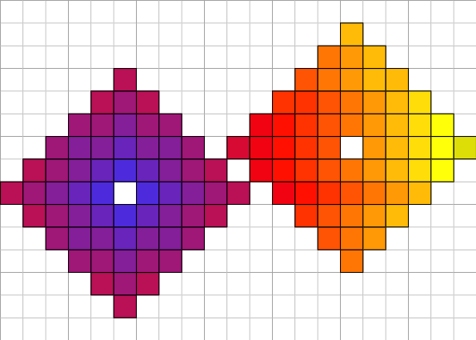

This example shows you how to use colormaps with Board2D streams. Note how we redefine the style of a specific mode for the drawable element.

visualization of resulting export.
#include <cmath>
#include <iostream>
#include "DGtal/base/Common.h"
#include "DGtal/io/boards/Board2D.h"
#include "DGtal/io/Color.h"
#include "DGtal/io/colormaps/GradientColorMap.h"
#include "DGtal/shapes/Shapes.h"
#include "DGtal/helpers/StdDefs.h"
using namespace std;
using namespace Z2i;
{
shape_set.erase( c1 );
shape_set.erase( c2 );
<<
SetMode( p1.className(),
"Paving" );
string specificStyle = p1.
className() +
"/Paving";
it != shape_set.end();
++it )
{
unsigned int d = (unsigned int) ceil( ( *it - c1 ).norm() );
cmap_grad( d ) ) )
<< *it;
}
board.
saveSVG(
"dgtalBoard2D-4-colormaps.svg");
board.
saveEPS(
"dgtalBoard2D-4-colormaps.eps");
board.
saveTikZ(
"dgtalBoard2D-4-colormaps.tikz");
#ifdef WITH_CAIRO
board.
saveCairo(
"dgtalBoard2D-4-colormaps-cairo.pdf", Board2D::CairoPDF);
board.
saveCairo(
"dgtalBoard2D-4-colormaps-cairo.png", Board2D::CairoPNG);
board.
saveCairo(
"dgtalBoard2D-4-colormaps-cairo.ps", Board2D::CairoPS);
board.
saveCairo(
"dgtalBoard2D-4-colormaps-cairo.svg", Board2D::CairoSVG);
#endif
return 0;
}